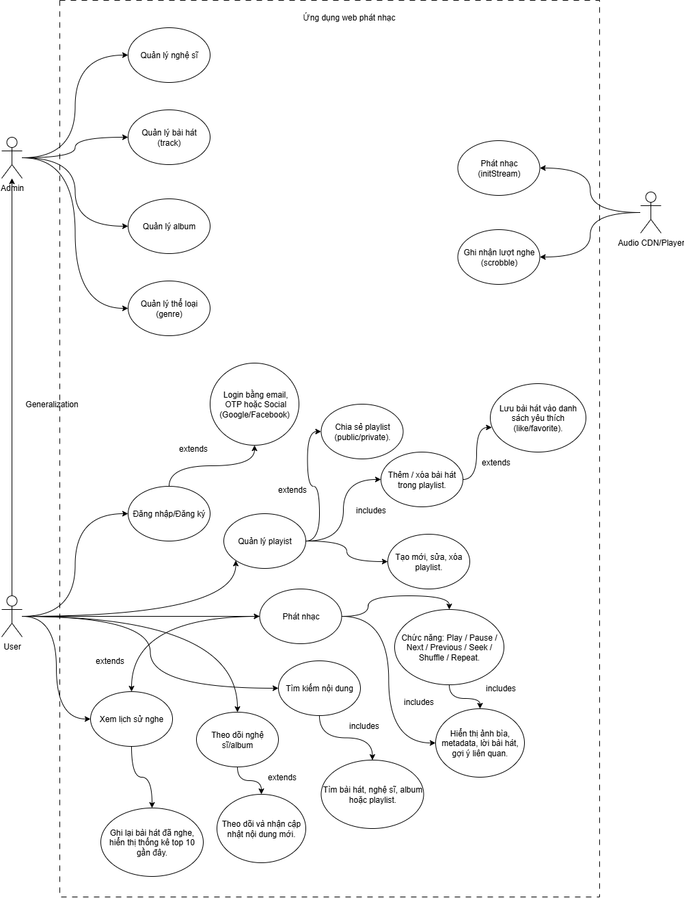
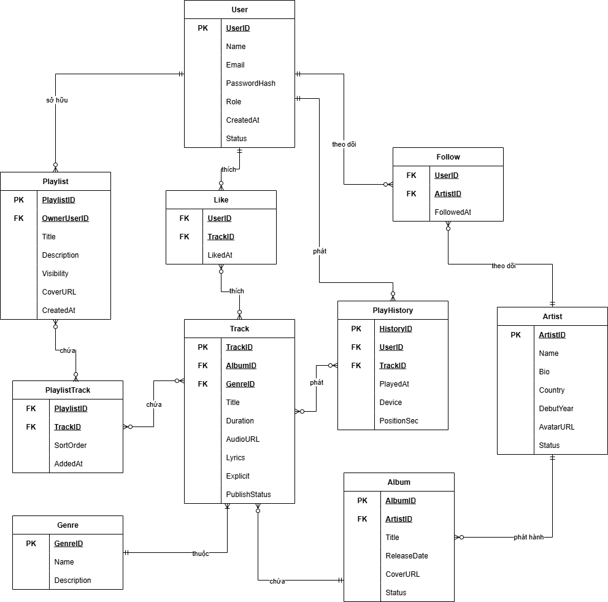
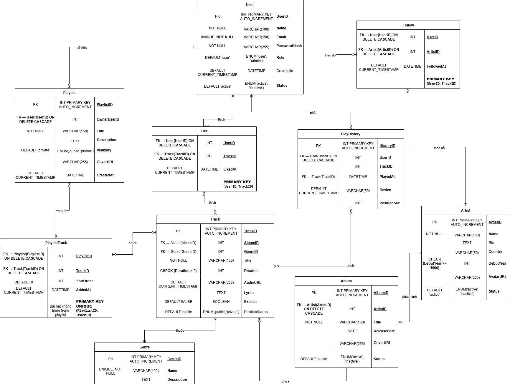

Yêu cầu: Ảnh sơ đồ Use Case và phần mô tả chức năng tổng quát.
Mô tả chức năng sơ đồ:
F:\STUDY\C_C++\NMCNPM_MySQL\Midterm Test\Music-Streaming-spec\3_1\Description-UC.txtYêu cầu: Ảnh mô tả luồng hoạt động giữa các thành phần.
Yêu cầu: Ảnh sơ đồ ER mô tả quan hệ giữa các thực thể dữ liệu.
Yêu cầu: Ảnh sơ đồ cơ sở dữ liệu dạng logic hoặc vật lý.
Yêu cầu: Chèn liên kết ảnh hoặc file HTML prototype.
Liên kết ảnh / file HTML sẽ được thêm tại đây:
(Thêm link prototype tại đây)Yêu cầu: Ảnh mô tả quy tắc nghiệp vụ, test case, và API tương ứng.
Yêu cầu: Liên kết đến video demo và HTML prototype hoạt động.
(Thêm link video demo tại đây)